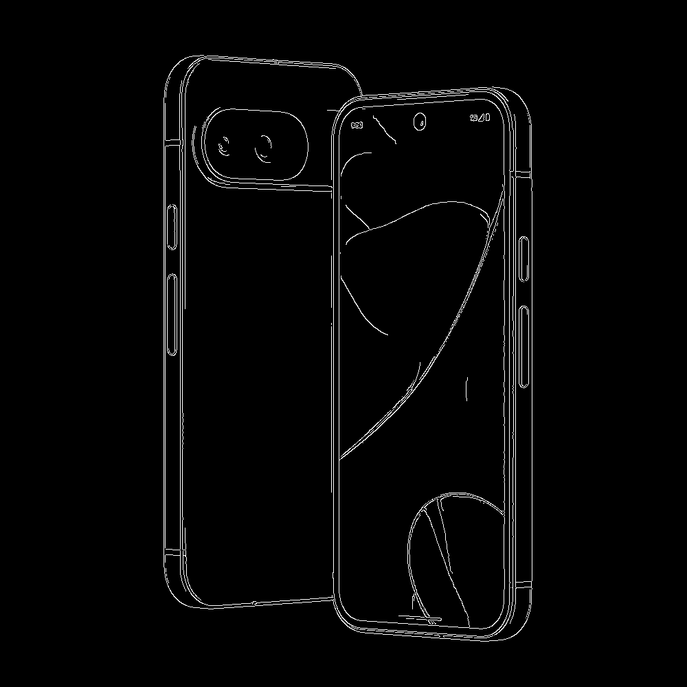

{% extends 'canny/base.html' %}

{% block title %}Edge Detectiton using Canny Edge Dectector{% endblock title %}

{% block content %}
<div class="upl-form-wrp">
    <form action="{% url 'canny:detect-edges' %}" method="POST" class="upl-frm">
        {% csrf_token %}
        <label for="image" class="f-lab">Image</label>
        <input type="file" name="image" accept=".png, .jpg" required
            class="inp">
        <button type="submit" class="btn">Detect Edges</button>
    </form>
</div>
<div class="org-res-wrp">
    <div class="org-res left ">
        <h3>Input Image</h3>
        
    </div>
    <div class="org-res">
        <h3>Output Image</h3>
        
    </div>
</div>
{% endblock content %}